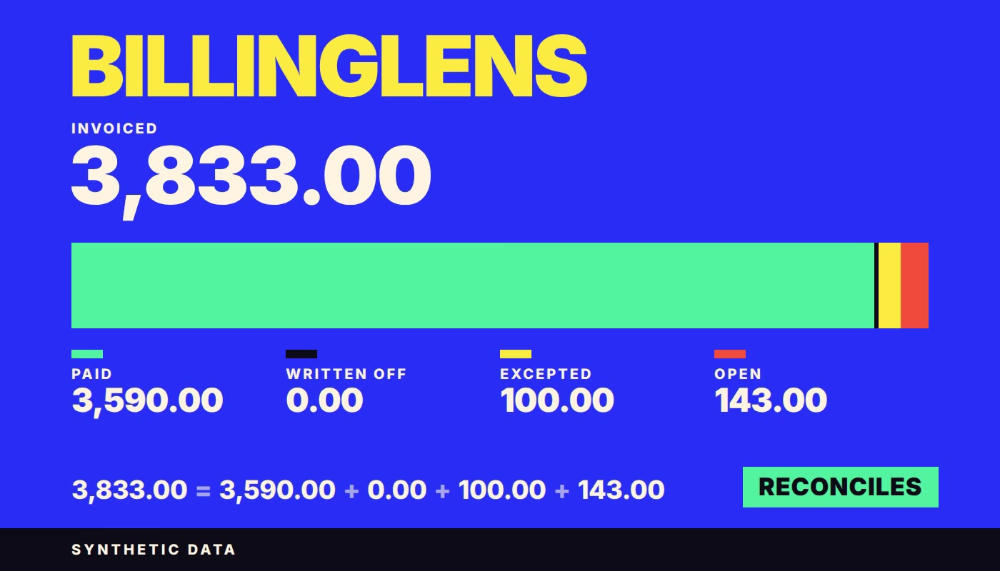

Dashboard · Subscription billing · Reconciliation · PostgreSQL · FastAPI · React · 2026-11
Where Does an Invoiced Dollar Go, and What Did the Books Know on the Day?
BillingLens: a synthetic subscription billing reconciliation workbench. It splits every invoice into paid, written off, excepted and open, reads MRR, settlement and orphan refunds, and answers each question at two instants: what had happened, and what the system knew by then. Nothing is executed. Nothing here is real data.

Everything is synthetic: 3 invented customers, 15 invoices and every figure come from a hand-specified fixture checked against an independent Python reference. The static demo computes in the browser over a bundled fixture. The database and the API run in CI only and are not hosted. The Written off segment is empty because the fixture has no write-off, and the last reviews left seven low findings and three medium items open: one invariant (file-order independence of loaded versions) is not scripted, CI artifacts could not be uploaded, and the audit text of the API layer is not committed.
01 — The problem
A billing report that only shows today's state cannot explain a number. A refund can land before its charge, a file can arrive late, a person can set a difference aside and a later payment can make that set-aside wrong. Subtracting cash from invoices hides all of that.
02 — What I built
An invoice bridge where invoiced always equals paid plus written off plus excepted plus open, with refunds and overpayments shown outside the identity. Every read takes two instants, so the same close can be shown as known on 12 Feb, 14 Feb, 1 Sep or 1 Oct. Proration is an exact fraction of seconds, MRR reports the annual residual instead of spreading it, and settlement is shown per period and per payout as two labelled figures.
03 — How it was built
- 01
The contract first
One contract fixes the row sets, the two time axes, the money rules, the error codes and what is out of scope: revenue recognition, tax, FX and a live processor.
- 02
A hand fixture
A 10000 to 16000 change at the midpoint of a 30 day period gives a credit of 5000, a debit of 8000 and an increment of 3000. January settlement nets 90000 from 103000 charged less 10000 refunded and 3000 in fees.
- 03
An independent reference
A stdlib-only Python calculator derives every view from the rows, with negative controls that must fail on the old rules. The browser engine is compared with it byte for byte for 8 views.
- 04
What the books knew
A refund that arrives before its charge is an orphan at 12 Feb and attached at 14 Feb. An exception approved on 1 Sep keeps its frozen figures after later loads.
- 05
Evidence
79 browser tests pass with axe-core at WCAG 2.2 AA, Lighthouse accessibility is 100 and layout shift is 0, and a six step scripted browser journey passes.
04 — Results
Measured on the synthetic release candidate (commit 2e5ac48): reference calculator 46 of 46, SQL manifest 55 pass and 1 partial of 56, race suite 6 of 6, API manifest 45 pass and 7 partial of 52, 77 API tests, 60 unit tests, 79 browser tests. Lighthouse on localhost with simulated throttling: performance 99 to 100, accessibility 100, best practices 96, SEO 100, largest contentful paint 341 to 1409 ms. These describe generated data and this code; they say nothing about any real billing system.
05 — What I'd do next
- Publish the static demo and capture the live page.
- Script the file-order replay and close the partial cases.
- Raise the mobile touch targets and add the missing state captures.